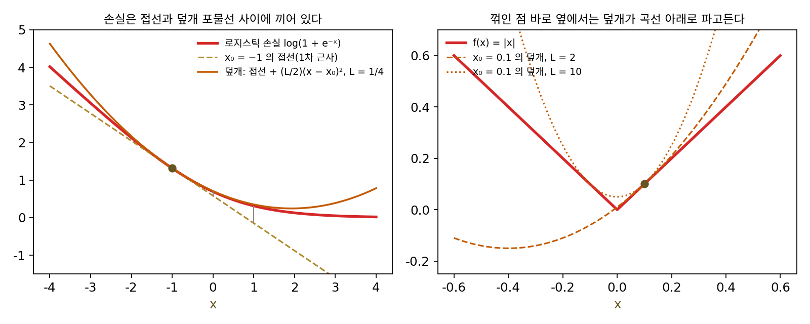
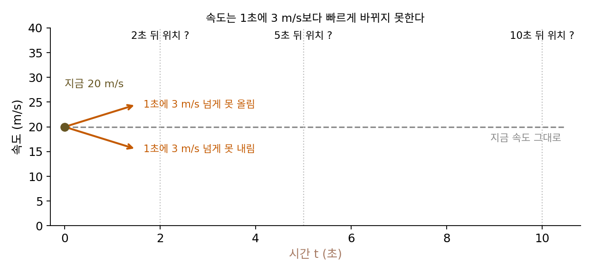
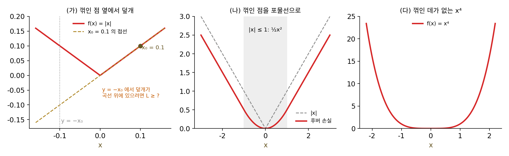
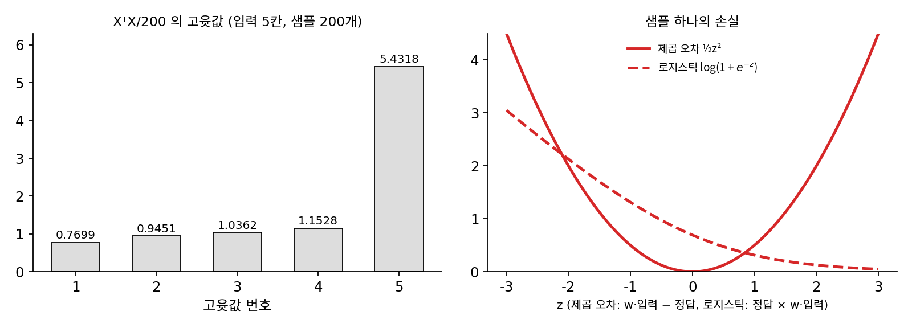

L-매끄러움: 그래디언트의 변화에 상한을 둔다
손실을 줄이는 계산은 대부분 지금 자리의 그래디언트를 보고 한 스텝 움직이는 일이다. 그래디언트를 보고 움직인다는 것은 손실을 지금 자리의 접선(1차 근사)으로 근사한다는 뜻이다. 접선은 가까운 곳에서는 잘 맞지만 멀어질수록 빗나간다. 한 스텝을 얼마나 크게 디뎌도 되는지 정하려면 그 빗나감이 얼마나 커질 수 있는지 알아야 한다. 손실 자체가 립시츠 연속이라는 것만으로는 부족하다. 손실이 얼마나 빨리 변하느냐가 아니라 접선의 기울기가 얼마나 빨리 바뀌느냐가 빗나감을 정하기 때문이다. 그래디언트에도 상한을 둘 수 있을까?
로지스틱 손실의 접선은 얼마나 빗나가나
로지스틱 회귀와 이진 분류 신경망이 쓰는 로지스틱 손실 ℓ(x) = log(1 + e−x)로 시작하자. x는 정답 부류의 점수다. 이 함수는 실제로 가장 많이 쓰는 손실 가운데 하나이면서 그래디언트가 모든 곳에서 식 하나로 적히기 때문에 골랐다. 그래디언트(1차원이라 미분값)는 ℓ′(x) = −1/(1 + ex)로 늘 −1과 0 사이에 있다. 그러니 손실 자체의 립시츠 상수는 1이다.
x₀ = −1(틀린 쪽으로 기운 예측)에서 손실은 1.3133, 그래디언트는 −0.7311이다. 여기서 그은 접선으로 h만큼 떨어진 곳의 손실을 근사하면 다음과 같다.
| 거리 h | 실제 ℓ(x₀ + h) | 접선 근삿값 | 빗나감 | 1/8 × h² |
|---|---|---|---|---|
| 0.5 | 0.9741 | 0.9477 | 0.0263 | 0.0312 |
| 1 | 0.6931 | 0.5822 | 0.1109 | 0.1250 |
| 2 | 0.3133 | −0.1489 | 0.4621 | 0.5000 |
| 4 | 0.0486 | −1.6110 | 1.6596 | 2.0000 |
거리가 두 배가 되면 빗나감은 대략 네 배가 된다. 빗나감이 거리의 제곱을 따라 자라고, 그 크기가 맨 오른쪽 칸 h²/8을 한 번도 넘지 않는다. 1/8은 어디서 왔을까? 빗나감은 접선을 긋고 나서 그래디언트가 바뀐 만큼 쌓이므로, 그래디언트가 얼마나 빨리 바뀌는지를 보면 된다. 로지스틱 손실의 그래디언트가 바뀌는 빠르기, 곧 2차 미분 ℓ″(x)은 x = 0에서 가장 커서 1/4이다. 그래디언트의 두 점 사이 기울기를 재도 −1과 1 사이는 0.2311, −0.1과 0.1 사이는 0.2498로 1/4을 넘지 않는다. 그래디언트가 거리 1을 갈 때마다 많아야 1/4씩 바뀌니, 거리 h를 가는 동안 쌓이는 빗나감은 많아야 (1/4) × h²/2 = h²/8이다.
이렇게 그래디언트 자체가 립시츠 연속인 함수, 곧 어느 두 점을 잡아도 그래디언트의 차이가 두 점 사이 거리의 L배를 넘지 않는 함수를 L-매끄러움 (그래디언트의 립시츠 상수가 L인 함수 / L-smooth)이라 한다. 로지스틱 손실은 1/4-매끄럽다. 2차 미분이 있는 함수라면 곡률(2차 미분의 크기)이 어디서나 L 이하라는 말과 같다. 이 성질이 있으면 로지스틱 손실 표에서 본 「빗나감 ≤ L/2 × 거리²」가 어느 점에서나 성립한다. 손실은 접선 위에 L/2 × 거리²을 얹은 포물선, 곧 덮개 아래에 늘 눌려 있다.
왼쪽은 정의이고, 오른쪽은 그 정의에서 나오는 덮개로 접선이 빗나가는 양이 L/2 × 거리²보다 크지 않다는 뜻이다. 이 장에서 립시츠 상수 L은 함수 자체의 립시츠 상수와 그래디언트의 립시츠 상수라는 두 가지 뜻으로 쓰이므로, 어느 쪽인지는 늘 말로 밝힌다.

오른쪽 그림은 립시츠 연속이지만 L-매끄럽지 않은 함수다. |x|는 두 점 사이 기울기가 1을 넘지 않지만, 그래디언트 자체가 x = 0을 지나는 순간 −1에서 1로 뛴다. 그래디언트가 뛰는 곳에서는 접선이 꺾인 점 너머를 전혀 내다보지 못한다.
ML에서: 손실을 고르면 L 이 따라 정해진다
L-매끄러움은 학습률(한 스텝에 그래디언트를 몇 배 해서 움직이나)을 얼마나 키워도 되는지를 정하는 숫자다. 덮개 포물선이 있으면 그래디언트 반대쪽으로 한 스텝 디뎠을 때 손실이 얼마나 줄어드는지를 아래에서 장담할 수 있고, 그 장담이 깨지는 경계가 L로 정해진다. 이 경계는 경사하강(그래디언트 반대쪽으로 조금씩 움직이기)을 다룰 때 「학습률의 상한」이라는 이름으로 자세히 따진다.
신경망을 짤 때 우리가 고르는 손실 함수와 활성화 함수가 L을 바꾸는데, 예를 들어 ReLU는 0에서 기울기가 0에서 1로 뛰므로 |x|처럼 L-매끄럽지 않다. 소프트플러스 log(1 + ex)는 ReLU를 둥글린 함수인데, 로지스틱 손실을 좌우로 뒤집은 꼴이라 1/4-매끄럽다. 회귀에서 이상치에 덜 휘둘리려고 쓰는 후버 손실도 |x|의 꺾인 점을 포물선으로 둥글려 L-매끄럽게 만든 것이다. 손실과 활성화 함수를 고르는 일이 곧 L을 고르는 일이다.
문제 4. 가속 페달의 한도
자동차가 20 m/s로 달리고 있다. 이 차는 1초에 3 m/s보다 빠르게 속도를 올리거나 내릴 수 없다(가속·감속의 한도 3 m/s²). (가) 지금 속도 그대로 간다고 보고 내다보면 5초 뒤 위치는 몇 m 앞인가? 실제로는 어디에서 어디 사이에 있을 수 있는가? (나) 이 예측의 오차 한도는 시간에 따라 어떻게 자라는가? (다) 10초 뒤에도 같은 계산이 맞는가?


(가)는 20 × 5 = 100 m요. 속도가 1초에 3씩 바뀔 수 있으니까 5초면 15 m/s까지 바뀌고, 그러면 오차는 15 × 5 = 75 m 정도겠죠.

속도가 처음부터 15만큼 바뀌어 있나요? 5초 동안 속도가 어떻게 바뀌는지 따라가 보세요.

아, 속도는 0초에 20이고 5초에 35까지 늘어요. 평균이 27.5니까 137.5 m요. 반대로 줄이면 평균 12.5라서 62.5 m고요. 오차는 37.5 m예요. 75의 절반이네요.

37.5면 ½ × 3 × 5²랑 같네. 오차가 시간의 제곱으로 자라는 건가?
위치의 기울기가 속도라면, 「가속도 상한 3」은 위치 함수에 대해 무슨 말이죠?

가속도는 속도가 1초에 바뀌는 양이니까, 위치의 기울기가 1초에 3보다 빨리 안 바뀐다는 거예요. 이 차의 위치는 3-매끄러운 함수네요. 직선 예측 위에 ½ × 3 × 시간²을 얹은 덮개 안에 갇히는 거고요.
그럼 2초 뒤, 10초 뒤는?
시간의 제곱으로 자라니까 2초 뒤에는 6 m, 5초 뒤에는 37.5 m, 10초 뒤에는 150 m야.

10초 뒤의 범위를 같은 식으로 구하면 50 m에서 350 m 사이인데, 정말 50 m까지 가까이 있을 수 있나요?

어, 아니에요. 20 m/s에서 3씩 줄이면 6.67초에 멈추고, 그 뒤로는 더 줄일 수가 없어요. 실제로 가장 가까운 곳은 66.7 m예요. 덮개는 넘을 수 없는 한도이지, 꼭 닿는 값은 아니네요. 「후진은 안 한다」 같은 다른 조건이 있으면 실제 범위는 덮개보다 좁아요.

내비게이션 도착 예정 시각이 가까운 데서는 잘 맞고 먼 데서는 크게 틀리는 거랑 같네요. 지금 속도로 직선 예측을 하는데, 오차가 거리의 제곱으로 커지니까요.
문제 5. 꺾인 점을 둥글리면
(가) f(x) = |x|의 x₀ = 0.1, 0.01, 0.001에서 덮개 f(x₀) + f′(x₀)(y − x₀) + (L/2)(y − x₀)²이 y = −x₀에서 곡선 위에 있으려면 L이 얼마 이상이어야 하는가? (나) 후버 손실(|x| ≤ 1에서 ½x², 그 밖에서 |x| − ½)의 그래디언트 립시츠 상수는? (다) x⁴은 L-매끄러운가?

|x|는 0 말고는 어디서나 미분 가능하니까, 0만 피하면 큰 L을 하나 잡아서 덮을 수 있지 않을까?
(가)의 세 점에서 직접 필요한 L을 구해 보세요.
x₀ = 0.1이면 y = −0.1에서 곡선은 0.1인데 접선은 −0.1이라 0.2를 메워야 해요. (L/2)(0.2)² ≥ 0.2이니까 L ≥ 10. 0.01이면 100, 0.001이면 1000이에요. 0에 다가갈수록 필요한 L이 1/x₀로 커져요. 0 하나만 빼면 된다고 생각했는데, 0 옆의 점들에서 이미 상수가 사라지네요.
(나)는 그래디언트가 |x| ≤ 1에서 x, 그 밖에서 ±1이니까 꺾이지 않고 이어져. 그래디언트의 두 점 사이 기울기가 가장 클 때 1.0000이야. 1-매끄러워. 꺾인 데를 포물선으로 둥글렸더니 상수가 생겼네.
(다)는 어떤가요? x⁴은 꺾인 데가 하나도 없는데요.

2차 미분이 12x²라서 [−1, 1]에서는 12, [−2, 2]에서는 48, [−10, 10]에서는 1200이에요. 꺾이지 않아도 멀리 가면 곡률이 끝없이 커지니까, 수직선 전체에서는 L-매끄럽지 않아요. 문제 2의 x²이 수직선 전체에서 립시츠 연속이 아니었던 것과 같은 현상이 한 단계 위(그래디언트)에서 일어나요.
L-매끄러움이 깨지는 경우가 두 가지네. 그래디언트가 한 점에서 뛰는 것(|x|, ReLU)과 멀리서 곡률이 끝없이 커지는 것(x⁴). 해석학 시간에 고른 연속성이 깨지는 반례를 두 가지로 만들던 것과 같아.
문제 6. 같은 데이터, 다른 손실
입력 5칸짜리 샘플 200개(각 칸 평균 1, 표준편차 1인 정규분포, 씨앗 고정)로 두 모델을 학습한다. XᵀX/200(X는 샘플 하나를 한 줄로 놓고 200줄 쌓은 행렬)의 고윳값은 0.7699, 0.9451, 1.0362, 1.1528, 5.4318이다. (가) 제곱 오차 손실 ½ × 평균(w·입력 − 정답)²의 그래디언트 립시츠 상수 L은? (나) 같은 입력으로 로지스틱 회귀 평균 log(1 + e−정답 × w·입력)(정답은 +1 또는 −1)를 학습하면 L은 얼마를 넘지 않는가? (다) 입력을 모두 2배 하면 (가)의 L은?

(가)는 헤시안(2차 편미분을 모은 행렬)이 XᵀX/200이니까 가장 큰 고윳값 5.4318이요. (나)는 손실만 바꿨으니까 같은 데이터면 L도 같지 않을까요?
로지스틱 손실의 곡률은 점수 하나에 대해 얼마까지였죠? 그 곡률이 입력 방향으로 어떻게 퍼질까요?

점수 하나에 대해서는 1/4이요. 그런데 그게 입력 방향으로 어떻게 퍼지는지는… 제곱 오차는 점수 하나에 대한 곡률이 1이라서 XᵀX/200이었죠?
그럼 샘플마다 곡률 1 대신 0과 1/4 사이 값이 붙으면요?

헤시안은 XᵀX/200에 0과 1/4 사이의 무게를 칸마다 곱한 거네요. 그러면 L ≤ 5.4318/4 = 1.3579요. 돌려 보니 w = 0에서 헤시안의 가장 큰 고윳값이 정확히 1.3579이고, 무작위로 고른 200점에서는 그보다 작았어요.
점수가 0인 곳에서 곡률이 1/4로 가장 크니까, w = 0에서 상한에 딱 닿는 거구나. (다)는 입력이 헤시안에 두 번 곱해지니까 4배인 21.7271이야.

같은 데이터인데 로지스틱 회귀의 L이 제곱 오차의 4분의 1이에요. 학습률에는 무슨 뜻일까요?

덮개가 4배 납작하니까 같은 장담을 지키면서 스텝을 4배 크게 디딜 수 있어요. 데이터는 그대로인데 손실을 바꾸면 안전한 스텝 크기가 바뀌어요. 문제 4(가속 페달의 한도)로 말하면 같은 길을 가속 한도가 다른 차로 달리는 것과 같아요.
남의 코드에서 학습률만 베껴 오면 안 되는 이유가 또 하나네요. 손실이 다르면 숫자의 뜻이 달라져요. 같은 "5분"이라도 걸어서 5분이랑 차로 5분이 다른 것처럼요.